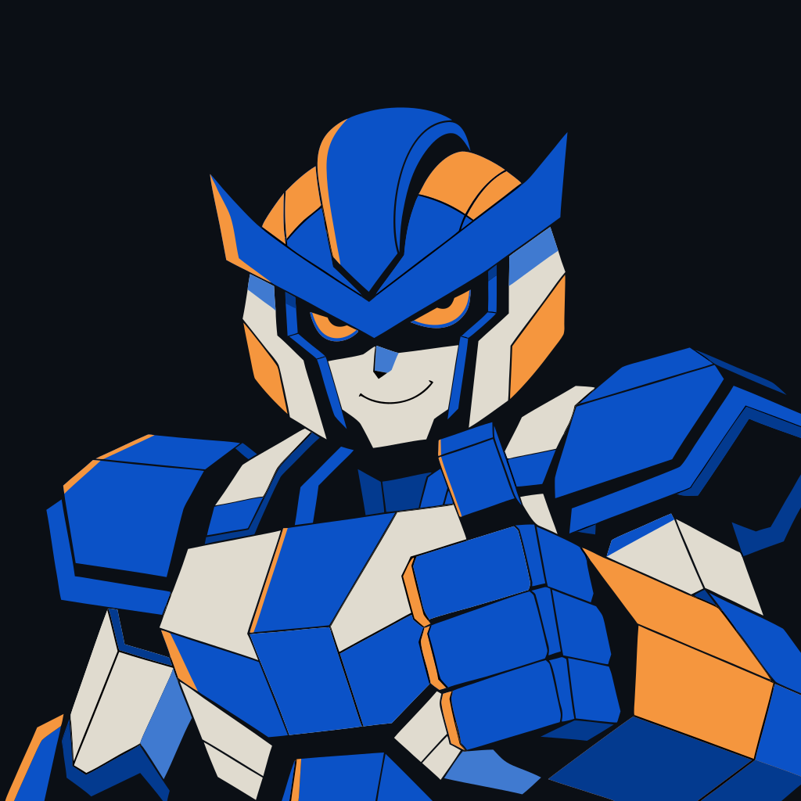
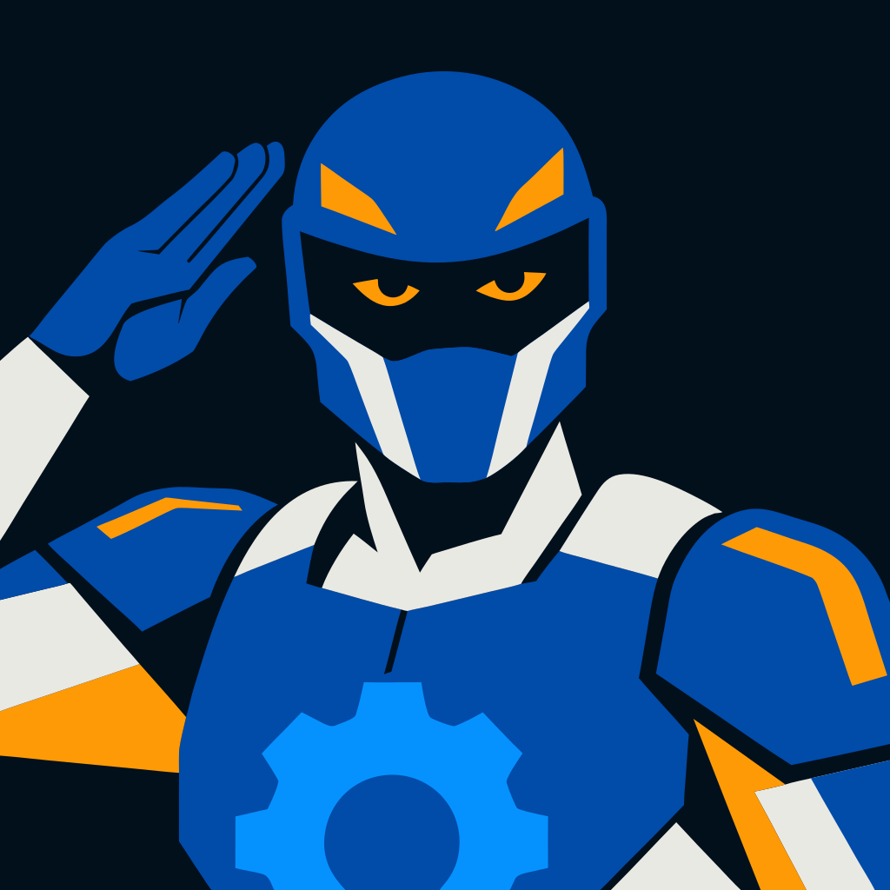

Hector, two directions · dangerous to the problem, safe for the hero

A · Anime mecha
Crested helmet, determined eyes, a small smile, thumbs up.

B · Ranger squad
Sleek helmet, expressive eye lights, a salute, the Clockwork gear on the chest. One colour per crew member.